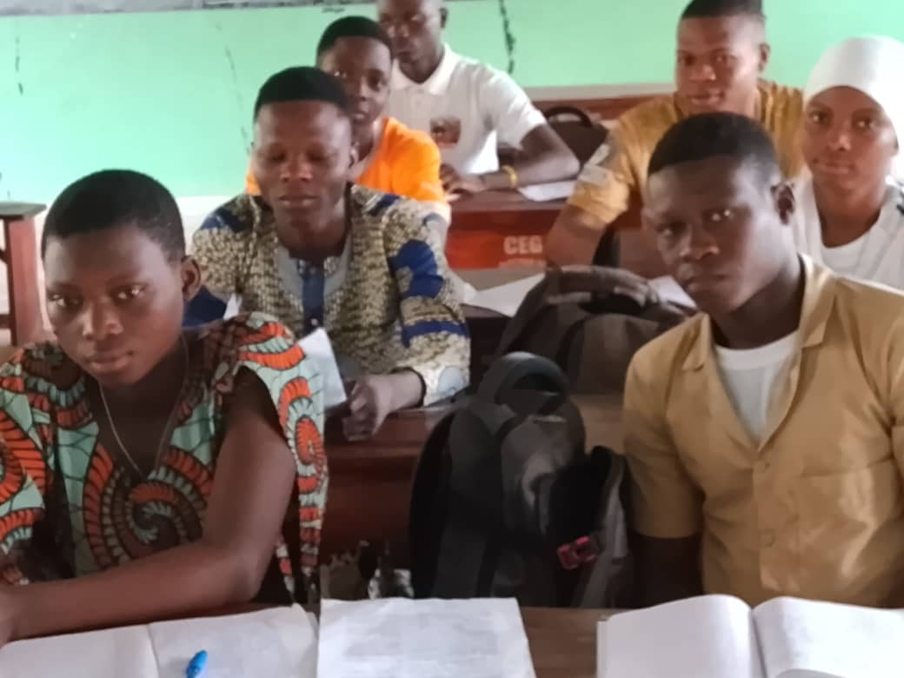
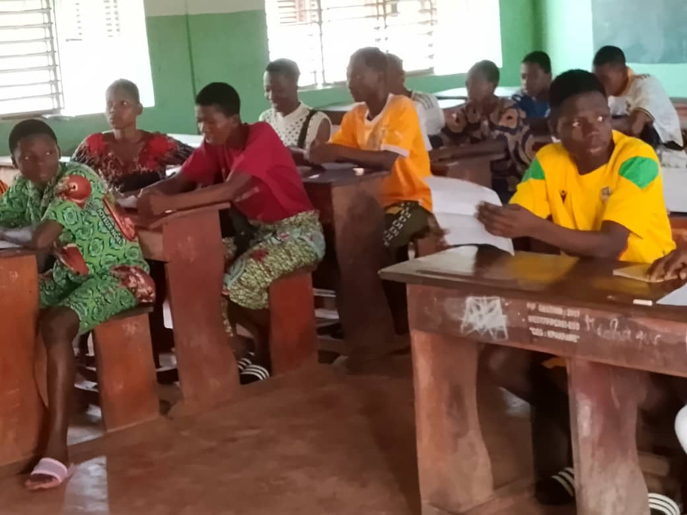

Collecte en milieu rural : Innovations et défis logistiques Rural Data Collection: Fieldwork Innovations & Logistical Challenges
Notre équipe présente les coulisses et l'ingénierie technique derrière notre système de collecte de données mobile de pointe, spécialement optimisé pour les environnements à faible connectivité et sans infrastructure électrique stable.
En exploitant la technologie de cryptage hors-ligne SurveyCTO (protocoles ODK) et des procédures rigoureuses d'audits quotidiens, le KEMT Center parvient à recueillir des données socio-économiques et scolaires d'une qualité remarquable. Ce protocole éprouvé résiste aux contraintes de transport et aux zones de couverture réseau blanche au Bénin et au Nigeria, garantissant une intégrité absolue pour les évaluations d'impact causal.
Our research team shares a comprehensive behind-the-scenes look at the technical architecture of our advanced mobile data collection system, custom-designed to operate in rural areas lacking cellular coverage and reliable power.
By leveraging SurveyCTO's robust offline encrypted storage (ODK standards) alongside daily rigorous automated audits, KEMT Center secures pristine household and educational data. This battle-tested fieldwork framework successfully bypasses network blackouts and severe logistical constraints in remote regions of Benin and Nigeria, ensuring maximum integrity for causal impact evaluation.
Indicateurs clés du terrain Key Fieldwork Metrics
98%
Taux de Synchro Data Sync Rate
95%
Engagement Rural Community Trust
40%
Gain d'Efficacité Cost & Time Saved
Composants de la collecte Data Pipeline Components
Cryptage ODK & Sécurité ODK Encryption & GDPR
Les données des élèves sont cryptées au point de saisie (AES-256) pour garantir un strict respect de la vie privée. Student-level survey replies are encrypted at capture (AES-256) to ensure absolute data confidentiality.
Validation en Temps Réel Real-Time Validation
Règles de cohérence internes et contraintes programmées directement dans les formulaires pour exclure les fausses entrées. Programmed consistency constraints in XLSForms immediately flag outliers and logical errors on site.
Suivi GPS et Reproductibilité GPS Auditing & Tracking
Coordonnées géographiques cryptées pour la cartographie des écoles et la vérification de la présence des enquêteurs. Encrypted school geographical coordinates mapped for survey auditing and cluster reproducibility analysis.
Formulaires & Journal de bord Fieldwork Protocols & Toolkits

L'Équipe de Terrain Fieldwork Team
KEMT Research KEMT Research
Notre équipe terrain regroupe des économistes, sociologues et enquêteurs chevronnés spécialisés dans les essais contrôlés randomisés (RCT) complexes. Our dedicated fieldwork team comprises seasoned economists, sociologists, and enumerators specializing in complex randomized controlled trials (RCTs).